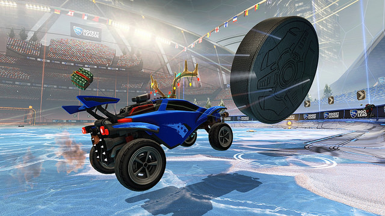

The objective of Rocket League is to use the player's car to score on the opposing team. Players can jump with their cars to hit the ball while in the air. Players can also collect speed boosts across the field, which once activated will allow players to quickly cross the field, add momentum to the ball, or destroy other players. Players can also perform dodges, causing their car to quickly spin in a given direction, which can be used to gain positioning advantage over the opponent.

Matches typically are 5 minutes long, with 10 second intermissions when each goal is scored. If the score is tied at the end of the 5 minutes, the game enters a sudden death mode where the first team who scores wins. Matches can be played with or against a computer-generated player or online players, with 1v1, 2v2, 3v3, and 4v4 game-modes available.
As well as the classic game-mode, Psyonix has created several Rocket League game-modes, each with a unique set of rules.
| Gamemode | Description |
|---|---|
| Snow Day | Users play on an ice hockey rink, and compete to score a hockey puck in the opponent's net.
 |
| Rocket Labs | Players compete on experimental maps before they are released into regular game-modes. The rules of this game-mode do not change, however it was created to gain user feeback from the community.
|
| Hoops | Players compete to score in oversized basketball hoops instead of a soccer net.
|
| Rumble | Players recieve 1 power up every 10 seconds, which can range from the ability to freeze the ball in mid-air to causing an opponent's car to lose control. |
| Dropshot | Players use an electrified ball to destroy panels on the opponent's side of the field. Once enough panels have been broken, a chasm in the floor will form. If the ball enters into the floor of the opponent, a player will recieve a goal. |